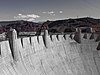

concrete

Definition: Concrete is a composite material composed of fine and coarse aggregate bonded together with a fluid cement (cement paste) that hardens (cures) over time. Concrete is the second-most-used substance in the world after water, and is the most widely used building material. Its usage worldwide, ton for ton, is twice that of steel, wood, plastics, and aluminium combined. Globally, the ready-mix concrete industry, the largest segment of the concrete market, is projected to exceed $600 billion in revenue by 2025. This widespread use results in a number of environmental impacts. Most notably, the production process for cement produces large volumes of greenhouse gas emissions, leading to net 8% of global emissions. Other environmental concerns include widespread illegal sand mining, impacts on the surrounding environment such as increased surface runoff or urban heat island effect, and potential public health implications from toxic ingredients. Significant research and development is being done to try to reduce the emissions or make concrete a source of carbon sequestration, and increase recycled and secondary raw materials content into the mix to achieve a circular economy. Concrete is expected to be a key material for structures resilient to climate disasters, as well as a solution to mitigate the pollution of other industries, capturing wastes such as coal fly ash or bauxite tailings and residue.
Source: Wikipedia
Wikipedia Page
Wikidata Page
Occurs in: